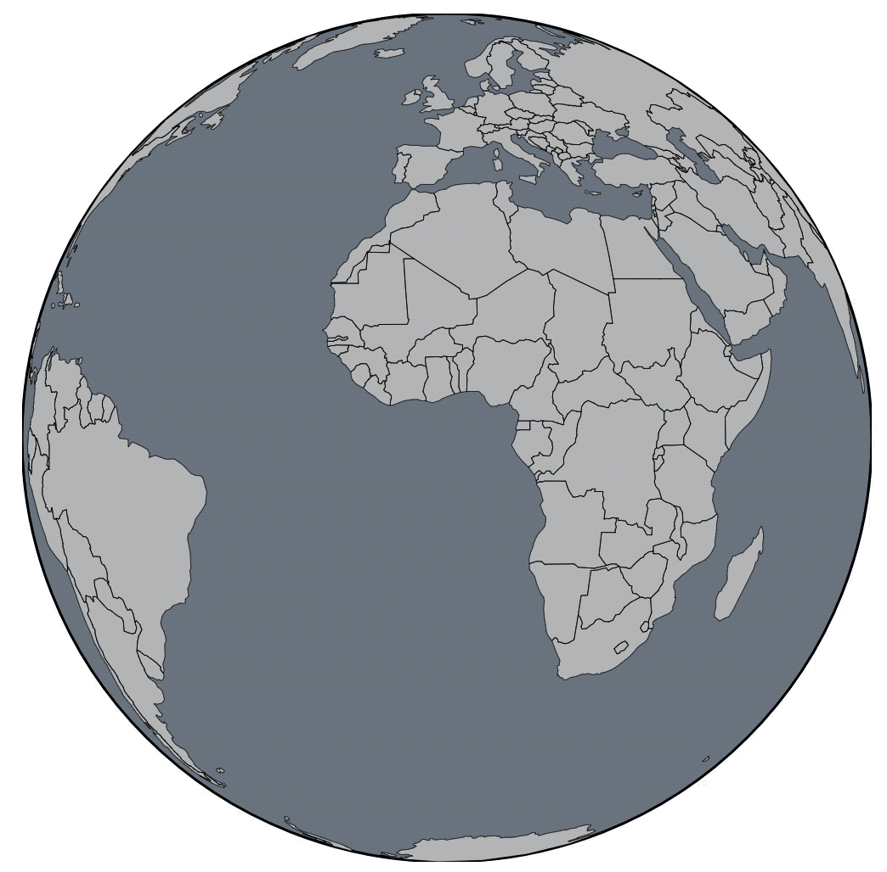

Tremors felt in New Delhi after Afghanistan quakes
India just witnessed earthquake, if you look carefully at the globe you'll notice the tremors
The earthquake shook buildings in Afghan capital Kabul, but there were no immediate reports of damage or casualties, reported Reuters. People in Delhi and the NCR region reported feeling light earthquake tremors. The quake was felt at about 4:15 pm today in the states of Punjab, Haryana and Jammu and Kashmir, a MeT Department official said. "The intensity of the earthquake, which had its epicentre in Afghanistan-Tajikistan border, measured 6.2 on the Richter Scale," the official said. There were no reports of loss of life or damage to property, government officials said.
Source: Times of India

Thankfully no damages have been reported.
Here is a wide thing of text
As long as it's a separate .row it won't interefere with the graphic. I can have this text go all the way across! It's fine! Nothing happens!
Let's see an update of how the earthquakes occured
This is a step
Right now it has a little padding on the top and bottom, and the text is all left-aligned, but you can change that easily in the CSS. It's all of the .row stuff.
This is another step
Blah blah blah blah
Blah blah blah blah
Blah blah blah blah
This is another step
Blah blah blah blah
Blah blah blah blah
Blah blah blah blah
This is another step
Blah blah blah blah
Blah blah blah blah
Blah blah blah blah
We can also put a normal content in here

Not everything needs to be a sticky column-based thing!
You could even do a stack if you wanted, too.